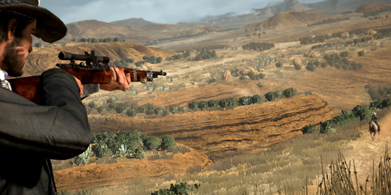
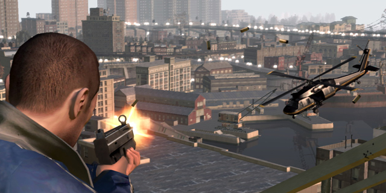
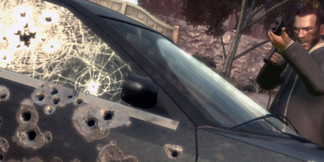
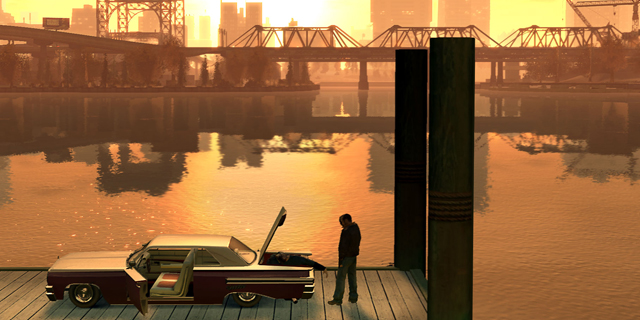
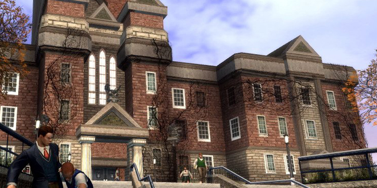
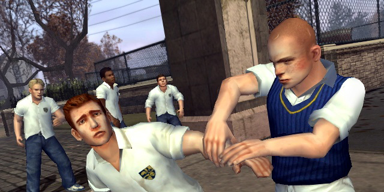
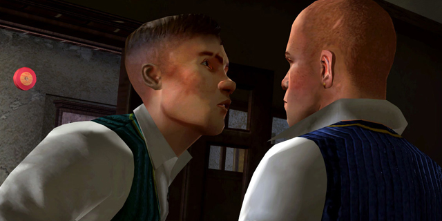
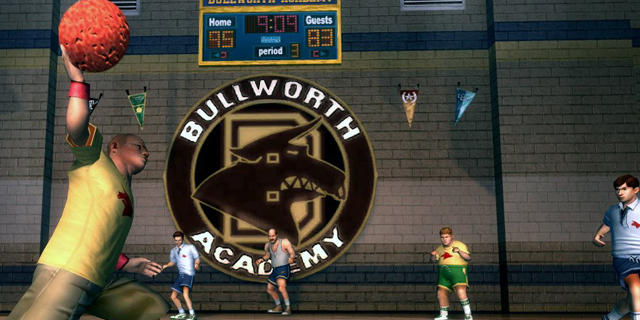
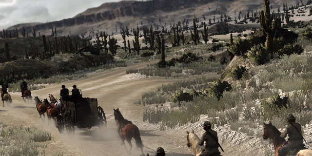
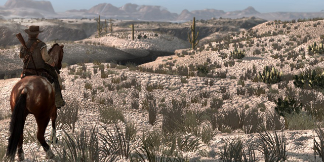

Setting, Immersion, Authenticity; RDR
2012-02-17 01:50:59
status: inherit
author: Bryan
For the last few weeks, I've spent the greater part of my free time soaking in the experience of Rockstar's Red Dead Redemption.


It's everything the critics say it is - beautiful, immersive, well-written, well-acted, epic, and in terms of the physical environment, incredibly well realized. Most agree that it does a better job in plunging you into its world than GTA IV or its previous incarnations.
"One of the buzzwords in the game industry these days is immersion. Rockstar scoffs at that. Red Dead Redemption ... does not merely immerse you in its fiction. Rather, it submerges you, grabbing you by the neck and forcing you down, down, down until you simply have no interest in coming up for air." - Seth Schiesel
Its not only the improvements on performance and rendering that make Red Dead Redemption more immersive than its predecessors, and its not gameplay in the single-player either. The reviewers who do address it are right to say they stick with what works in RDR... Grand Theft Horse, one might say.
There are two fundamental differences with RDR's sandbox that makes it much easier to get lost in the simulation, and I would argue that these particular elements position it closer to Bully than GTA IV. Its not gameplay, its not graphics, its not technology or voice acting, its not writing - its the setting, and how it relates to people and violence, and the player's interactions with both.
Although Red Dead Redemption is without a doubt setting the bar extraordinarily high in terms of realistically and compellingly rendering huge, wide open swaths of land that feels right, in a sense the GTA series is fundamentally more ambitious; ambitious to an extent that the experience becomes less sustainable - immersion as a function of authenticity becomes more difficult to maintain.
LIBERTY CITY
Grand Theft Auto IV was another incredible technical achievement. I had never experienced such a feeling of place and life in a simulated environment in the opening hours of its gameplay - and the referential, satirical nature of the entire place only increased the delight I felt walking its streets. This was a familiar feeling - they did the same with GTA III when it was first released, and San Andreas also captured a certain sense of life, space, and danger in its take on suburban Los Angeles neighborhoods.


What happens after a few hours go by in the game? The immersive quality of the simulation as virtual place starts to crack. The more a player delves into the world, the more the experience of this fictional, satirical, living city returns to the category of "game to be gamed." As a virtual place, that not tied into the inherent mayhem of the player's potential actions is ultimately hollow - a collage of facades, fake doors and storefronts, a Hollywood set.
How much more ambitious can you get than attempting to capture the life and activity of a major global city, and to give the player freedom to go wherever, whenever? If the illusion of authenticity as virtual place fades for some players (it did for me), what keeps immersion in GTA going is the time-tested sandbox gameplay, technology/rendering, and unparalleled writing.


My main point though is that the beginning of GTA IV doesn't feel like only a sandbox, it feels ALIVE. You drive carefully(maybe), observe the locals. Listen to hours of radio shows. Sit and watch television. Take a stroll through the neighborhood. You take care of your car, park it nicely. Maybe take a girl to a show.
But by the end, you know it. You're gaming it. The sheer amount of violence you've experienced creates a dissonance between Liberty City as virtual city and Liberty City as deathmatch map. You careen around corners, slamming into curbs and passerby. You dump a car into the river for the fun of it. Do whatever you want, and its fun, but its not quite as alive anymore. Whether or not this is developer intention is one thing, and it is fun - but still nothing in GTA feels quite so compelling to me as those first moments of feeling the life of the city.
BULLWORTH ACADEMY
If we compare Grand Theft Auto to Bully, we see a much less ambitious, but structurally similar setting to its parent series. It remains brilliantly written with the usual solid gameplay, but incorporating such a different setting that the player's potential actions are dramatically different, while utilizing similar progression and narrative logic.


Bully takes place in a fictional New England town, where the prep school is its most defining feature. It is no metropolitan center, but it has its quirks, its neighborhoods, its alleys. The school itself is a microcosm itself of typical school-age social groups - still a satirical take, but one much smaller in scope.
You navigate the social landscape of the student body - try to get what you need from the geeks, try to impress the girls, fight off the bullies, harass the jocks, and so on - while slowly gaining access to more of the town itself, but don't get caught breaking curfew, mind you. The protagonist spends his time avoiding townies, exploring the natural surroundings, participating in bike races, and so on.
Bully is a take on American adolescence that should resonate with authenticity to anyone who received a contemporary American education, in ways that GTA's stories of car chases, shootouts, and gang wars does not. Nevertheless, in terms of gameplay logic and narrative progression, Bully is still GTA at school, minus guns.


Regardless, Bully felt much more alive and authentic throughout the entire experience, simply because there is less facade(actual and symbolic) in a more fictionalized and less urban space. There is no attempt to simulate the immensely complex social ecosystems of a major global city, or even the open countryside - instead just that of a little prep school and its environs.
By reducing the amount of effort needed to make an inherently social, massive environment compelling and visually striking in order to counteract the inevitable struggles with authenticity, time can be spent instead to fleshing out the personalities of the much more limited nature of the school, town, natural environment, and social groups.
Just as importantly, the actions the player takes may be fictionalized and cartoonish, but they don't create a dissonance between the life of the area as virtual place and the mechanisms and meaningfulness of what the player is doing.
Ultimately its far less ambitious, but the game positively teems with culturally relevant authenticity and life.
NEW AUSTIN, ET AL.
Red Dead Redemption has taken huge leaps from GTA III, Bully, and GTA IV in terms of displaying the virtual environment. GTA IV had its vistas, but RDR has VISTAS with capital letters. It without a doubt recreates the initial immersion of playing GTA IV again - the place is empty, desolate, and unforgiving, but oh-so-alive.
Here's where Red Dead Redemption has more in common with Bully than Grand Theft Auto, however. Though technologically unparalleled, in a sense New Austin and RDR's other territories are much less ambitious environments than Liberty City. There are very few social landscapes to map. The suggested population is the tiniest fraction of that suggested by GTA. There are no blocks and blocks of storefronts, no floors and floors of apartments. There are no crowds of people going about their business on the streets, every day, all day. There is only the desert.


The characters, the writing, and the gameplay are still all on point, but nothing new. RDR feels better than GTA because less holes show through the facade; there's less to simulate; there's less to impersonate. The key was making the frontier feel like the frontier, and the less people are involved, the easier it is to do that.
Red Dead Redemption is GTA in a lawless wilderness, giving greater context to the violence which you inflict and suffer, and showing less set pieces of complex AIs to simulate which ultimately feels that much more authentic and immersive. Does it make RDR less ambitious? In that sense, yes - but the experience feels richer and more alive throughout the entire game.
DESIGN NOTES:
People and social environments are hard to sustainably convey authenticity with over the course of a long game. Unless you want to attempt GTA-level scope of writing, acting, rendering, technology, narrative, and gameplay, strategically limit social environments with deliberate settings to create less fractures to cover.
Violence can make a realistically simulated environment feel less alive, less real, and less immersive over time, unless violence is an intrinsic part of the setting.
Comments: